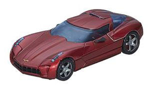
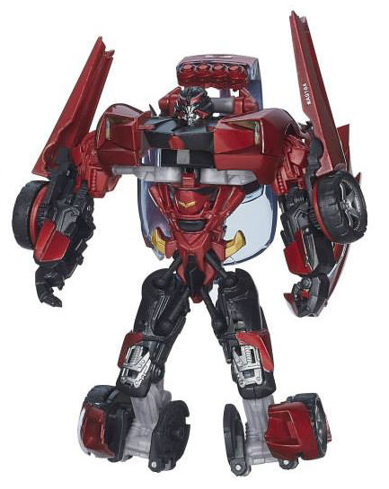
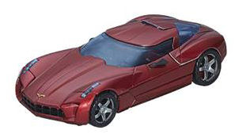
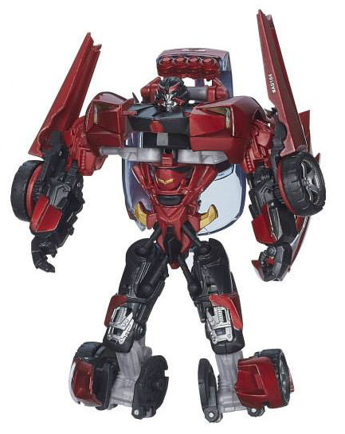
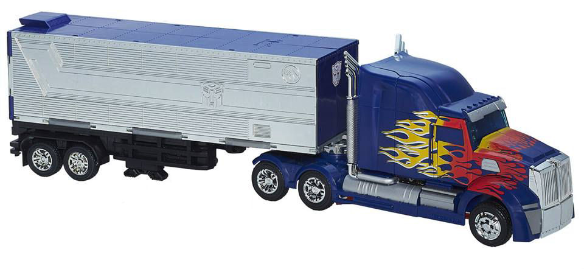
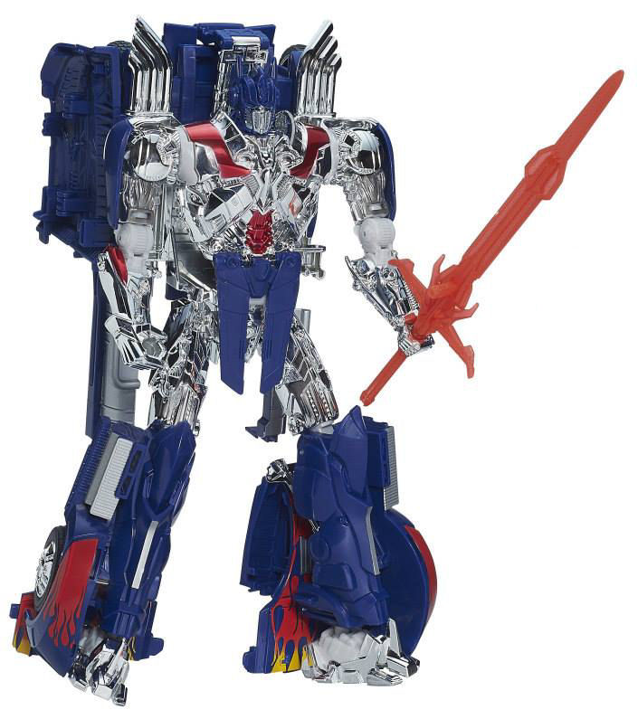
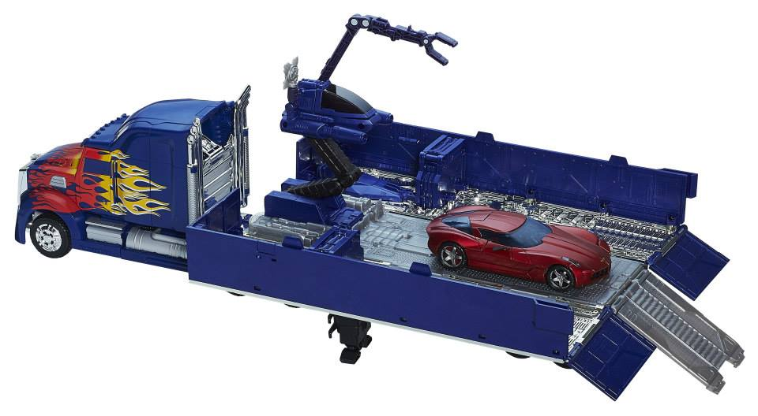

 
Size : Deluxe
Difficulty of Transformation : Medium
Color Scheme : Black, shiny metallic moderately dark red, transparent dark blue, and some light milky gray, dull metallic gold, and some silver
Individual Rating : 9.7
Price
: $160 (U.S.)
Allegiances
: Autobot
(NOTE: Because this set is composed of repaints,
this is not a full-blown review. This mainly covers any changes made to
the set and the color scheme, and merely compares it to the original versions
of these molds. For a review on the original AoE First Edition Optimus
Prime, go
here
. For a review on the original
RotF deluxe Sideswipe, go
here
.)
 Sideswipe
Sideswipe


Size
: Deluxe
Difficulty of Transformation
: Medium
Color Scheme
: Black, shiny metallic
moderately dark red, transparent dark blue, and some light milky gray,
dull metallic gold, and some silver
Individual Rating
: 9.7
This version of Sideswipe
is-- hey, wait a minute! This isn't Sideswipe, this is
RotF
Swerve
! He's got the new face sculpt, the same general color scheme,
and everything! Why is he called Sideswipe now? Does Optimus just pretend
Sideswipe never died and now treats Swerve as Sideswipe? Yeah, that's what
I'm going with. Anyways, considering how similar "Sideswipe" is to RotF
Swerve, there really isn't much to talk about here. There's only three
differences. The first-- major-- one is that all of the red plastic has
been coated with a VERY nice shiny metallic red that's a bit darker than
the red on RotF Swerve. It looks considerably nicer, though admittedly
a bit TOO shiny to look like an actual car finish. Still, the additional
paint apps are appreciated. Additionally, Sideswipe's chest has been painted
mostly black, as opposed to being left red like on RotF Swerve, while conversely
the little exhaust ports coming out the rear of the vehicle mode are red
as opposed to the black on Swerve. Otherwise, the colors and paint apps
of this toy are identical to RotF Swerve.
No mold changes have
been made to this toy when compared to RotF Swerve.
 Optimus
Prime w/ trailer
Optimus
Prime w/ trailer



Difficulty of Transformation
: Medium
Color Scheme
: Dark blue, chrome
silver, silver, and some black, light milky bluish gray, white, orangish
yellow, chrome red, transparent dark blue, very light milky gray, dull
gray, and transparent fiery red
Individual Rating
: 7.5
The biggest change to
this version of Optimus Prime from his original "First Edition" toy is
the addition of the trailer from the
Masterpiece
Optimus Prime v2.0
toy, which scales surprisingly well with the First
Edition toy. It all looks quite good in vehicle mode, even if once you
open the trailer it's not remotely accurate to the movie design of said
trailer. As for the color scheme, the same basic color scheme is here,
though the blue here is just a tad darker than on the original First Edition
toy. The silver paint on the trailer and some parts of the cab looks nice,
but MAN there is a lot of silver chrome on this toy, particularly on the
upper two-thirds of the robot mode and on the interior of the trailer.
In fact, there's TOO MUCH chrome-- it's all rather blinding, particularly
on the robot. Removing the blue chrome paint apps on Optimus' chest and
upper legs from the original First Edition version was a bad idea, as that
makes his upper body far too silver with not enough color to break it up.
Regardless of how well it stands up over time or not, I would've preferred
substantially less chrome on the toy and more paint apps for the premium
price. On the plus side, the fading of the flame paint apps on Optimus'
vehicle mode to orangish-yellow near the middle with white "trails" is
a really nice touch, and improves the look of the vehicle mode more than
you'd think for such a change. The black plastic used for the drone part
of the trailer repair bay also looks nice, and helps break up what is in
danger of being too much dark blue on the interior of the trailer (though
more paint apps on said trailer on the walls and/or floor would still have
been much appreciated). The transparent fiery red used for the sword is
also a nice shade of the color, though not having any paint on the weapon
for this expensive of a toy in inexcusable.
Optimus does have a
minor mold change, and that's that his headsculpt is now sculpted with
the faceplate up-- which I must say looks better to me than with the faceplate
down. Optimus also, sadly, has had the mold's shield taken away, though
this is likely because it would be impossible to both connect the trailer
to the vehicle mode AND store the shield.
The "Platinum Edition" Optimus Prime w/ trailer & "Sideswipe" (really Swerve) set is hard to recommend. For one, the price is STEEP. Yes, the First Edition Optimus mold is large, and he's got a Masterpiece trailer with him, but he should have come with another figure or two to justify the original price-- particularly figures that differed from their original sculpts by more than just a couple of paint apps, shiny paint apps or no. Optimus himself also has way too much chrome and-- surprisingly for a premium toy-- not enough paint on some places, like in robot mode. Only recommended for completists and/or those who absolutely MUST have the RotF Swerve toy and can't find the original for a decent price. Otherwise this set really isn't worth the price, unless you find it on a VERY substantial (40%+) discount.
Reviews by Beastbot
(Note: Images are from Hasbro ; and yes, Sideswipe's robot mode is mistransformed, with the feet not folded down and the back car kibble not placed correctly.)